I'm Joanna Gerr, currently a freshman in the class of 2020 at MIT.
My major field of study is CMS, Comparative Media Studies, with a particular emphasis on Game Design; along the same lines, I'm minoring in EECS, Electrical Engineering & Computer Science, because I believe that understanding Game Development is an essential prerequisite to being truly adept at designing games.
At present, I study these two fields concurrently with the intention to enter the games industry after exiting university. Games have always held a place near and dear to my heart; I grew up on the likes of educational Jumpstart and Zoombini games, later discovering atmospheric adventures like Myst, narrative realms like that of Mass Effect, and competitive spheres like Dota and related ESports.
Over time, I've learned to appreciate the medium for as a form of interactive art. Narrative, role-playing games that follow a coherent story but still grant the player mobility to contribute to the grander scheme of things are my favorite types of games. To me, games are an incredibly engaging form of storytelling: they allow you to experience and influence a story, rather than relegating you to the sidelines where you simply spectate predetermined events.
The desire to design captivating, complex games that will impact others as profoundly as my favorite games have influenced me, if not even moreso, is what drives me in this direction. And I intend to forge my path through these thorny woods til we get there!
For further contact, you can reach me at gerr@mit.edu.
Art & Design
Starting with my mum's frequent excursions to the Metropolitan with my sister and I when we were just children, I've developed a deep-set love for the arts, classical and contemporary alike.
My own style is rather cute and cartoony; irresistibly cheery characters like Hello Kitty and Rilakkuma coloured my rosy childhood days, and I find that the optimistic aura happy characters exude make others feel happier too.
LINE
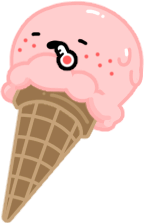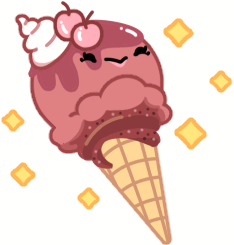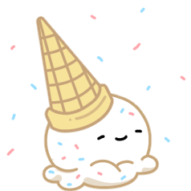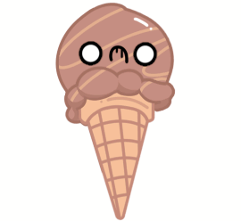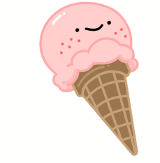
I've recently been creating animated sticker packs for the messaging app LINE. Pictured here is part of Daily Lives of Ice Cream, my first complete sticker pack featuring a whole bunch of delicious ice cream cones in their daily lives.
I enjoy designing cute graphics, so creating sticker packs full of cute icons that adhere to a cohesive theme is a fun pasttime for me. As a details-oriented person, planning out which 16 sufficiently different emotions the ice cream cones should be infused with and finding ways to incorporate puns (like "I Scream!") is both engaging and rewarding.
ES@B
At the request of my friend who attends Berkeley, I designed the headers and backgrounds for ESports at Berkeley's Twitch.tv team streaming page.
This project was particularly exciting to work on, as I was given a number of constraints to satisfy when designing the main background. The background needed reference the school and incorporate Berkeley's semi-pro college ESports (competitive gaming) teams--like their Overwatch, Dota, and StarCraft teams. I decided to make a collage-style background that could utilize pictures of the ESports teams, but combine it with a translucent image of Berkeley's mascot and a panoramic image of Berkeley's famed tower at sunset--which complemented Berkeley's orange-and-navy color scheme perfectly!
3D Modeling
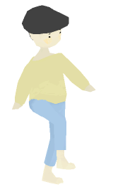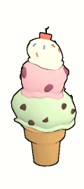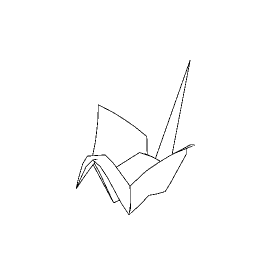
I've taken on the challenge of designing 3D assets with the intentions of using them to create a game in Unity3D in the near future. I delight in creating lowpoly renders of various items, designing looping animations for original characters, and experimenting with the different types of stylistic effects one can achieve--like using cel shading to make assets look cartoon-like, or removing shadows to make 3D objects seem 2D.
Kaleidoscope
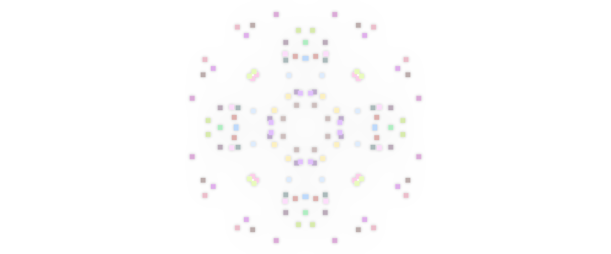
One field that has always interested me is computationally generated artwork and the debate over how to measure its worth. Is it worth less for being the product of algorithms and not human reason, or is the notion that only humans with "soul" can create art of value an antiquated ideal of the past?
I created a petit javascript kaleidoscope as an experiment to take a preliminary look into this artistic tension, and found that this kaleidoscope provides a virtual oasis of sorts; the smooth motions of the particles are almost calming in their predictability. Hence, this applet shows the increasingly variant purposes art can be used for in the modern era.
E-Book GIF Library
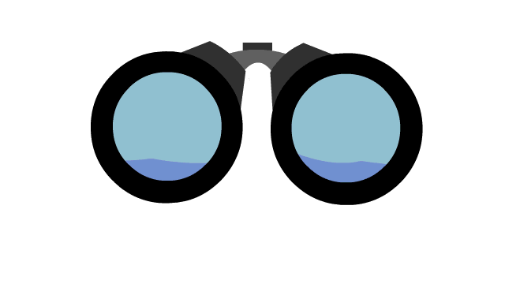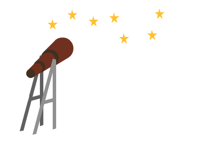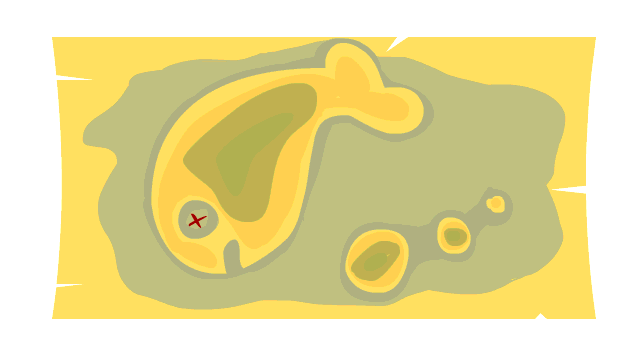
In highschool, I created a collection of .gifs for E-Books that assisted children with learning disabilities in understanding language and expanding their vocabulary. The full library features over 40 gifs ordered by subject matter, with separate clusters showing different definitions for a single word. Pictured here are various representations of the word "find": to find land, to find a constellation, and to find treasure.
Animation
Inspired by the imaginative Studio Ghibli films from my youth, I started animating with Adobe Flash in the 7th grade. Since then, I've progressed onto more advanced programs and studied traditional animation techniques while creating pushing myself to create longer, independent works.
Mr. Balloon's Wild Ride
I crafted this animated short my senior year of highschool for the Virginia Film Festival's High School Directors competition, where it recieved the runners-up award.
Made in TVPaint, a bitmap-based animation software, everything this animation was hand-drawn or hand-designed by me--right down to the musical accents! I emulated the style of old silent films by splicing in black-and-white screens with dialogue to help narrate the story of a balloon boy who'd lost his head and longed to get it back.
Fight Club
This animation harkens back to the classic 1999 movie "Fight Club", paying homage to one (or two, really!) of the most memorable rules of our generation: "Don't talk about fight club."
Also made in TVPaint, this animation displays my growing interest in how cinematography affects presentation. I wanted to experiment with different angles to make the objects in the image feel more volumetric and three-dimensional in nature, and almost paradoxically so, given the flattening effect of my greyscale coloration combined with minimal shading.
Environmental PSA
I made this for the World of Seven Billion's Deforestation Public Service Announcement category, where it won the top prize.
Unlike the first two animations above, this one was created in Adobe Flash, where I first planted my animation roots! I wanted this informational video to adopt the infographic-reminiscient style of vector graphics, as opposed to a more natural bitmap based style. Then, after researching and storyboarding what information I wanted to pack into the minute-long time limit, I dubbed the PSA over.
Games
I recall vividly one episode in which my auntie, a doctor by trade, introduced me to the Trauma Center series with hopes that I might enjoy playing as a surgeon and consider being a doctor in the future. As luck would have it, I loved playing as a surgeon... enough to the point where I fell in love with games, instead of the medical profession.
Since I believe that the best way to learn is by doing, I've independently produced and published a number of mobile games for Android on the Google Play store under the moniker gouda-cchi. Here's an in-depth look at a few of them:
Hibearnation
Hibearnation is a game featuring thirty distinct levels, each of which must be traversed successfully in order to advance onto the next. I developed this game from scratch using C++ in Unity, meaning that I made all the pixel-art assets, generated the sound effects, designed the levels, scripted behaviours for different terrains, and implemented Accelerometer-based motion controls for the player character.
My favorite part of the process was thinking about how to design the levels such that they would increase in difficulty and keep the player engaged, which I accomplished by increasing the complexity of the puzzles as levels progressed by adding more types of environmental interactions that the player would need to learn to utilize to reach their goals. This demonstration shows Level 17, which features four veggies to collect before advancing, and three different types of terrain: the normal orange bricks, slowing white snow, and slippery blue ice.
Downboar
Downboar is a light shoot-em-up style game that draws gameplay influence from the likes of the bullet-hell Touhou Project series. Here, the player gathers points from lightly grazing the pellets of falling mud while trying to avoid a full on collision with the mud and their snouts. Downboar was also developed entirely by me in C++ with Unity, from the assets to the scripting to the sound effects.
I had great fun in designing varied bullet shapes and patterns, like formations that hone in and target the player's weak spot, while working to strike a balance between difficulty and enjoyability; I try to make my games approachable, such that even my grandmother could play this on her phone while waiting for the bus! In this demonstration, you can see how slow, normal, fast, and homing bullets appear at different intervals, and observe certain patterns like the V-shaped formation and parallel straight lines.